Vorwort
Die UEF ist die erste der drei Fraktionen, welche es in Supreme Commander 2 zu spielen gibt. Die Abkürzung steht hierbei für United Earth Federation und verkörpert die »Rasse« des Menschen. Die Fraktion ist darüber hinaus besonders durch ihre besonderen Features (später genannt) als Einsteigerfraktion anzusehen. Die UEF ist easy to learn aber hard to master; so braucht es schon einige Zeit, bis man als Spieler jeden Kniff heraus hat und die Fraktion suffizient nutzen kann.Kampagne
Um Spoiler zu vermeiden wird die Kampagne nur im groben Überblick geschildert!Eingesetzt um gegen die Aliens (die Erleuchteten) zu kämpfen gerät man in Konflikt mit seinen Kollegen insbesondere mit dem Commander. Daraufhin beginnt ein »Krieg innerhalb der eigenen Fraktion«, es kämpft also Mensch gegen Mensch. So entwickelt sich die aufregende Story und der Protagonist muss sich für oder gegen die UEF entscheiden.
Überblick
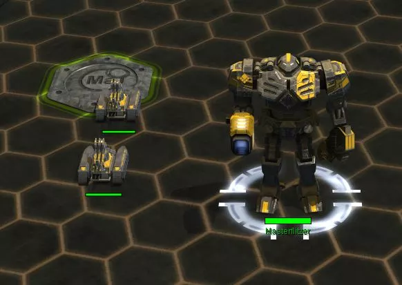 Im Multiplayer-Modus startet jeder Spieler immer mit zwei Technikern und seiner Kommandozentrale (kurz ACU) samt eines eigenen »Aufbauplatzes« inklusive 4 Masseablagerungen. So kann eine Grundlegende Versorgung hergestellt werden und es kommt zu keiner ungerechten Verteilung der Ressourcen.Basis Einheiten
ACU
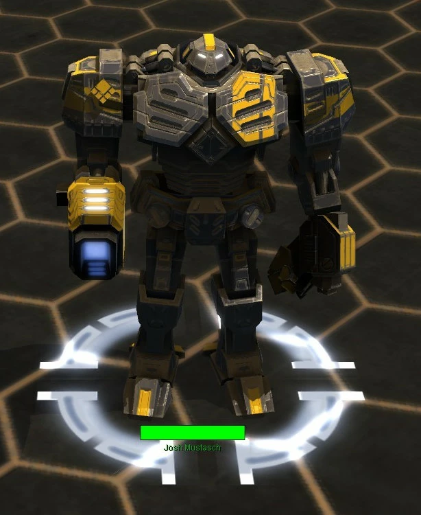 Die ACU (Armored Command Unit) ist die vom Spieler bemannte Kommandoeinheit. Sie ist vergleichbar mit der Größe eines Hochhauses, obwohl die Ingame-Maßstäbe schwer mit der Realität zu vergleichen sind. Von ihr aus wird der Anfang gesteuert und koordiniert, nicht zuletzt, da sie folgende Vorzüge aufweist:- Grundlegende Bewaffnung mit Explosiv-, MG- und Anti-Air-Geschützen
- 50% beschleunigtes Bautempo
- Rettungskapsel (Kopf absprengbar) als letzte Fluchtmöglichkeit
- Weitere erforschbare Features
- Bau aller Gebäude
Techniker
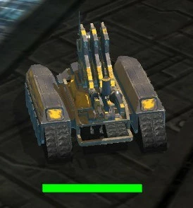 Der Techniker ist eine multifunktionelle Einheit, welche besonders für den Gebäudebau zuständig ist. Im Gegensatz zur ACU kann sie Gebäude langsamer bauen und hat weitaus weniger Special Features.Die Einheit kann in jeder normalen Fabrik gebaut und die somit die Anzahl der Techniker erweitert werden.
Land Einheiten
- Feldtechniker: Der Feldtechniker kann beschädigte Einheiten reparieren, um so eine vollständige Zerstörung zu verhindern. Er kann KEINE Gebäude reparieren.
- Titan Sturmbot: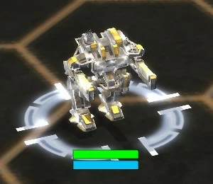 Der Titan Sturmbot ist eine Einheit, die der ACU Kommandoeinheit sehr ähnlich sieht. Sie verfügt über zwei Beine, womit sie sich auch fortbewegt. Besonders punktet der Titan mit seiner Geschwindigkeit, welche einen effektiven »Sturm« ermöglichen. Die Einheit ist darüber hinaus auch sehr günstig und wie bereits erwähnt: Die Masse ist entscheidend.
- Rockhead Panzer: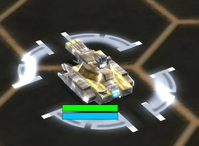 Der Rockhead Panzer ist die nächste Einheit nach dem Titan. Er ist ein normaler Panzer mit bis zu drei Läufen. Auch hier macht es mal wieder die Masse. Ein Panzer alleine hat wenig Chance aber zusammen in einem Verbund in Kooperation mit nachfolgenden Einheiten wird der Sieg wesentlich einfacher.
- Arnachist Anti-Air: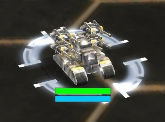 Der Arnachist ist eine mobile Flugabwehrkanone kurz FLAK genannt und verfügt über zwei Vierläufige »Gaußkanonen«. Sie ist besonders effektiv in der Abwehr eines kleinen Bomber- oder Jägerschwarms, jedoch schwach gegen diverse Luft-Prototypen. Ebenso kann sie sich nicht gegen Bodeneinheiten verteidigen und fungiert daher eher als Supporter.
- Demolisher Artillerie: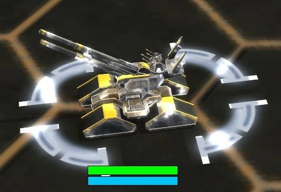 Der Demolisher ist eine mobile Artilleriezentrale, welche einen erhöhten Feuerradius hat. Dieser ist etwa halb so groß wie der, der befestigten Artillerie (siehe Gebäude). Diese übt in kleiner Form Flächenschaden, kann aber schlecht auf nahe Distanz kämpfen.
- Meteor Raketenwerfer: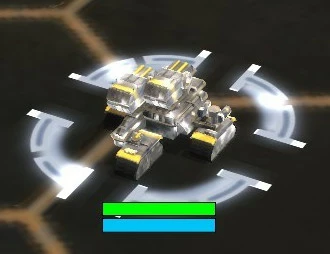 Der Meteor ist ein mobiler Raketenwerfer, welcher weniger von Spielern sondern hauptsächlich von der KI benutzt wird. Dabei übt er ähnlichen Flächenschaden wie die Artillerie aus, jedoch in einer kleineren Reichweite und nicht derartig effektiv.
- P-Schild: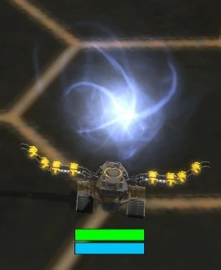 Der P-Schild ist ein mobiler Schildgenerator, welcher ein Schild über sich und seine Einheiten spannt, um Beschuss von Außerhalb bis zu einem gewissen Maße abzuhalten. So kann der genommene Schaden vermindert werden. Der Schild verliert jedoch an Stärke und fällt nach stetigem Beschuss aus, was die Einheiten wieder normal verwundbar macht. Auch der P-Schild ist eine Support-Einheit, da sie keinerlei Schaden anderen Gebäuden oder Einheiten machen kann.
- Scharfschütze: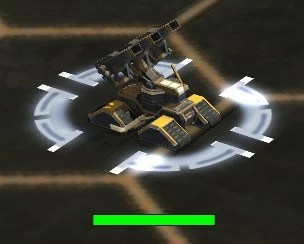 Der Scharfschütze ist genaugenommen ebenso ein mobiler Raketenwerfer wie der Meteor. Er hat lediglich eine höhere Präzision und Reichweite. Außerdem ist er ein wenig günstiger im Bau.
Luft Einheiten
- Wasp: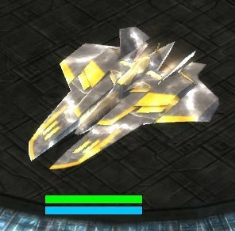 Der Wasp-Jäger ist die Luft-zu-Luft Abwehr der UEF und kann dementsprechend keine Bodenziele angreifen. Der Jäger ist außerdem sehr schwach gegen Flugabwehr-Geschütze. Hier gewinnt die Masse im Angriff zusammen mit Bombern und Gunships.
- Eagle Eye: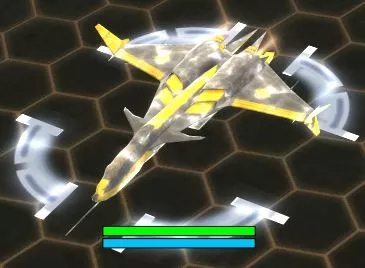 Der Eagle-Eye Bomber ist ebenfalls eine Grundeinheit der Luftwaffe, welche ohne Forschung hergestellt werden kann. Sie ist am effektivsten gegen Gebäude jedoch anfällig gegen Jäger und Luftabwehr. Daher sollte man diese immer in Kombination mit Jägern fliegen. Die Bomben können später Streuschaden bekommen und eine Sichtaufklärung ermöglichen. Ob diese jedoch so effektiv ist, ist fraglich, da für den Bombenabwurf ein direkter Überflug des betroffenen Gebietes vorgenommen werden muss und dadurch sowieso alles aufgeklärt wird.
- Broadsword: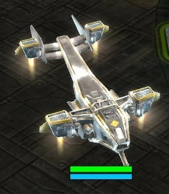 Das Broadsword Gunship hat seine Stärke definitiv im Kampf gegen bodengebundene Infanterie/Fahrzeuge. Mit seiner einer Minigun ähnelnden Waffe ist es gegen diese am effektivsten. Dennoch ist das Gunship extrem anfällig für Luftabwehr und kann so extrem schnell zerstört werden. Es ist daher nur gegen vorrückende Truppen und nicht gegen feste Basen einzusetzen.
- C18 Starlifter: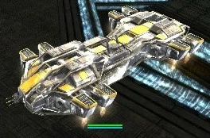 Der C18 Starlifter ist ein leichtes Transport-Shuttle welches für den Infanterietransport benutzt wird. Es kann insgesamt 30 Einheiten oder für die schnelle Evakuierung zwei ACUs, welche in diesem Falle jeweils den Platz von 15 Einheitenslots verbrauchen. Der Transporter kann sich nur schwer gegen Boden-Luft- oder Luft-Luft-Abwehr wehren und benötigt daher meistens anderweitigen Schutz. Außerdem kann eine Fährverbindung hergestellt werden, bei der der C18 eigenständig Einheiten aufnimmt und an dem zugewiesenen Platz abliefert.
Land Prototypen
- Fatboy Ⅱ: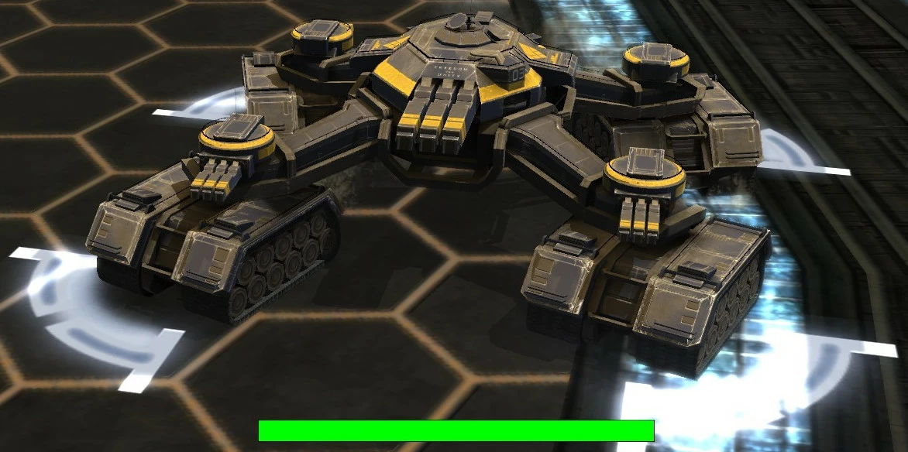 Der Fatboy 2 ist, wie der Name schon erahnen lässt ein ziemlich fetter Kandidat. Er punktet mit seiner großen Reichweiten und seinen effektiven Kanonen. Er besitzt jedoch keine Verteidigung gegenüber Gunships oder Jägern, welches seine größten Schwachstellen sind. Daher sollte er niemals alleine vorangehen sondern von einem Geschwader Jäger unterstützt werden.
- King Kriptor: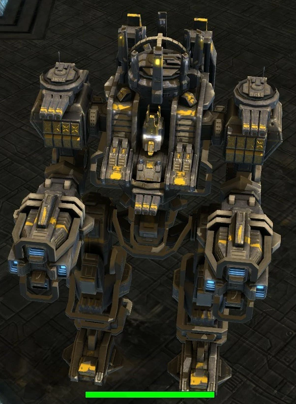 Der King Kriptor ist ein Titan Sturmbot, nur eben in Riesig. Ein gewaltiges Monster welches mit einer Plasmakanone sehr effektiv ganze Trupps und große Gebäude vernichtet. Außer einer seiner kleinen Gauß-Kanone hat er nämlich keine Verteidigung gegen Luftangriffe. Deshalb ist die Luftwaffe sein größtes Problem, welches ihn ehe man sich versieht in die Knie zwängt.
- Jackhammer: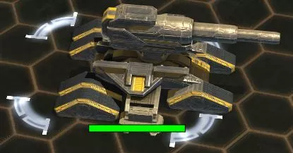 Dann gibt es da aber noch den Jackhammer. Zusammengefaltet sieht er aus wie ein fahrendes Bügeleisen, doch einmal vollständig aktiviert ist er ein zerstörerisches Monstrum, welches nur auf sein Futter wartet. Mit seiner riesigen Kanone und hohen Reichweite ist er effektiv gegen alles, was sich ihm in den Weg stellt, außer der Luftwaffe – mal wieder! Im aktivierten Modus kann sich der Jackhammer nicht bewegen, weshalb er größtenteils als Defensive eingesetzt werden sollte.
Luft Prototypen
- AC-1000 Terror: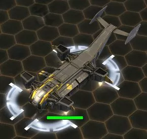 Dieser gewaltige Gunship-Prototyp ist wie das normale Gunship besonders gegen Gebäude und Einheiten einzusetzen. Dennoch ist sein Problem mal wieder die Luft-Luft-Verteidigung der Gegner, da sich der Sturmflieger kaum gegen Jäger zur Wehr setzen kann.
- C230 Star King Extreme: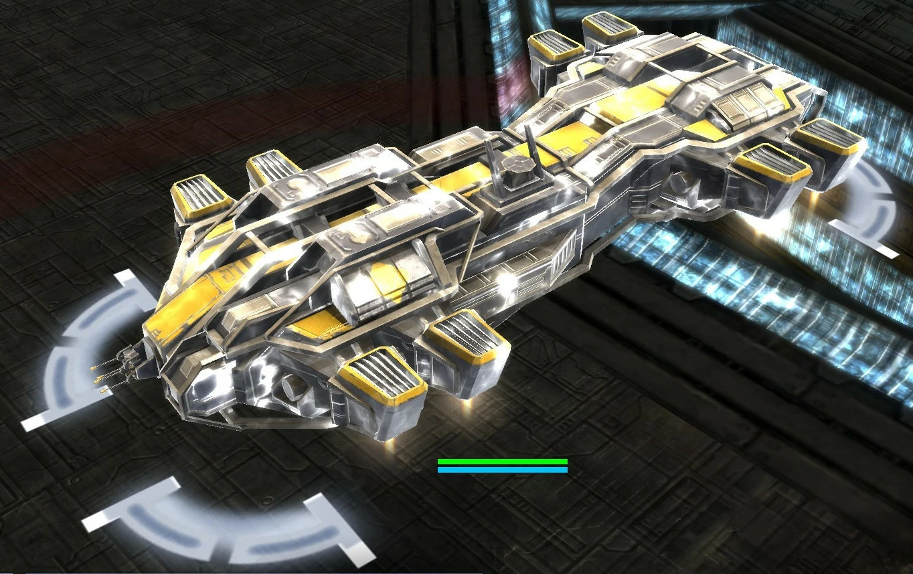 Dieser Lufttransporter kann auch andere Prototypen wie z.B. den King Kriptor transportieren, um diesen schneller an die Front oder sogar hinter feindliche Linien zu bringen. Außerdem liegt das Einheitenlagerungsmaximum nun bei 75.
- Fliegende Festung: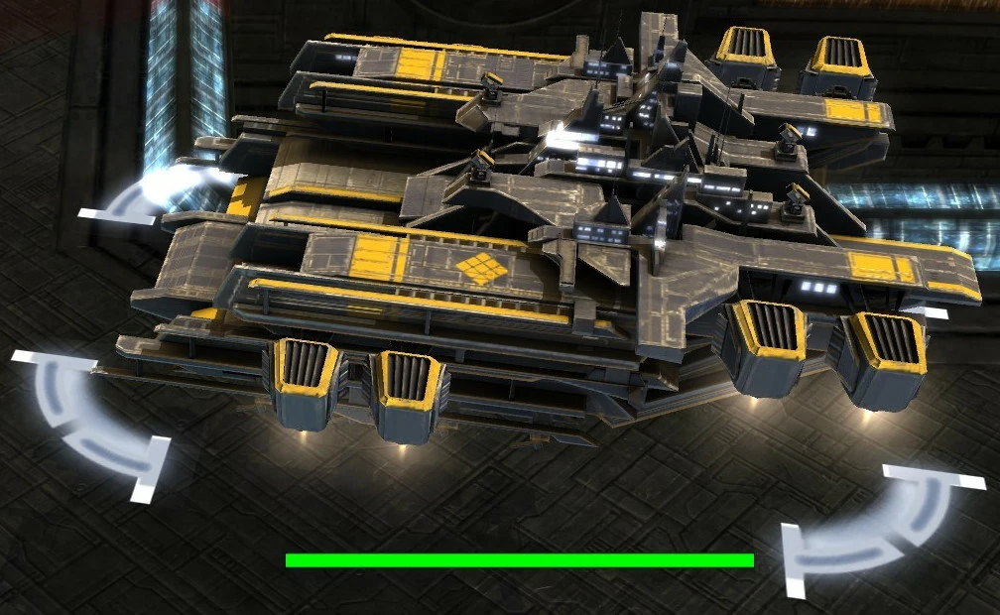 Zuletzt gibt es da noch die Fliegende Festung. Ein Flugzeug, welches Flugzeuge herstellt. Es kann Flugzeuge sogar schneller herstellen als eine normale Luftwaffenfabrik. Bis zu 25 Flugzeuge jeder Art können in der Festung gelagert und entsendet werden.
Gebäude Prototypen
- Aegis: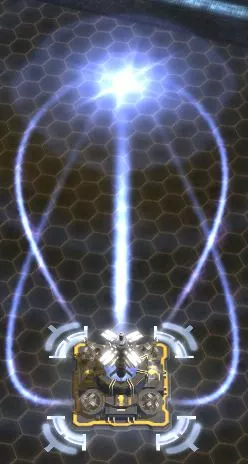 Das Wort »Aegis« stammt aus dem altgriechischen und heißt „Schild“ und genau das ist dieses Gebäude. Der Aegis ist ein Schildgenerator, welcher eine erheblich vergrößerte Spanne hat und noch dazu mehr Schaden standhält. Außerdem lässt sich dieser Schild mit Energie wieder aufladen, was besonders unter stetigem Artilleriehagel sehr nützlich sein kann.
- Disruptor: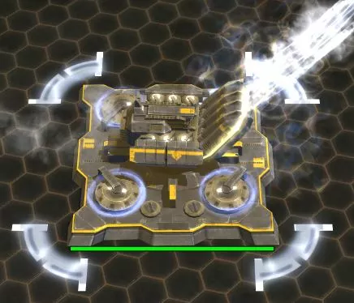 Der Disruptor ist eine EMP-Artillerie. EMPs sind Elektro-Magnetische Impulse. Er feuert gezielte Schüsse, um so Schilde zu deaktivieren, Gegner auszuschalten und dann großen Schaden anzurichten. Im Vergleich zu einer Masse an normalen Langstreckenartillerien der UEF hat der Disruptor aber hinsichtlich der Effektivität das Nachsehen.
- Noah Einheitenkanone: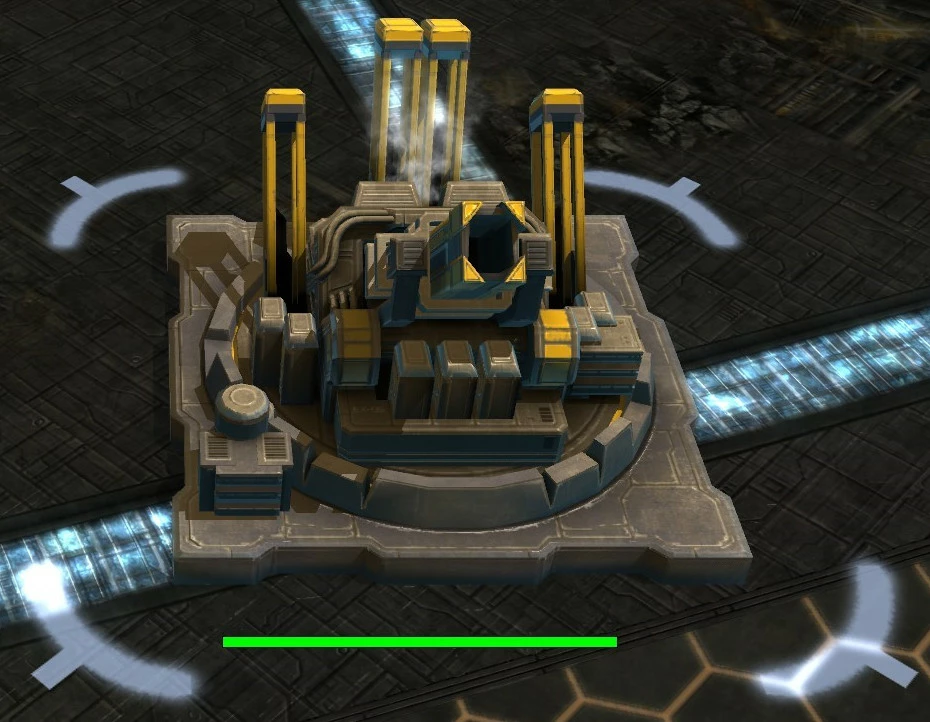 Die Noah Einheitenkanone kann bis zu 20 Landeinheiten auf einmal herstellen und in einem Paket verschicken. Per Luftpost landen diese dann hinter den feindlichen Linien und können von dort aus wirken. Jedoch sind 20 Einheiten nicht so viel und werden schnell zerstört, weshalb auch die Noah nur in Massen verwendet werden sollte.